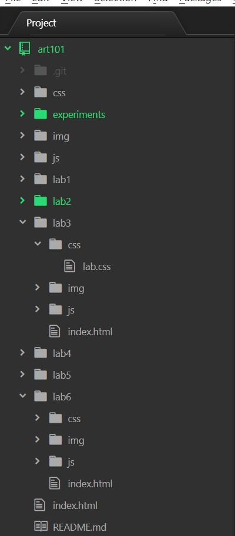

For this lab we where supposed to learn how to create a local file structure and learn how to make a index.html file.
The difficilties that that arose had more to do with being confused about what exactly we needed to do. I got confuse about if we were using the index.html file under lab 3 or under Art 101. I eventually figured it out with my partner. The actual process of writting and formating code was not very hard. We also took a while to realize we where creating seperate sites that we work on together, as opposed to creating one site together like last time.
The screenshots of my steps are below
